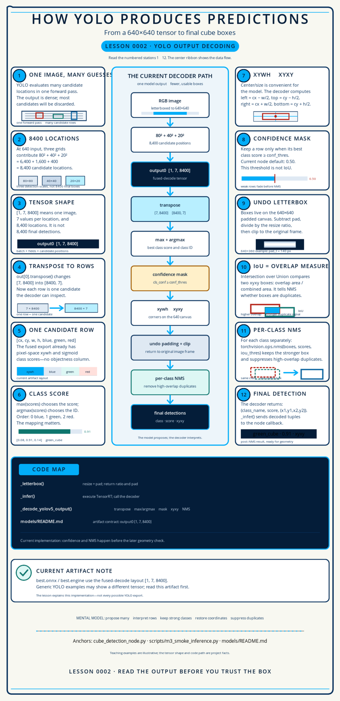

Software · AI · Robotics / Learning system
Lesson 0002 — How YOLO produces predictions
A detector does not return “the three cubes.” It proposes many candidate rows. This lesson follows the current project artifact from output0 [1, 7, 8400] to the final boxes that the ROS 2 node can use.
How to use this lesson
Read one section, inspect its diagram, and predict what the next operation should do. The goal is to understand the decoder’s data shape and decisions—not to memorize a generic YOLO implementation that may use a different export layout.
Prerequisites and scope
This lesson assumes only that you understand pixels, image coordinates, and the idea of a bounding box from Lesson 0001. No neural-network mathematics is required. We explain enough about feature maps and detection heads to understand where the tensor comes from; Lesson 0003 explains how their learned parameters are trained.

The question this lesson answers
How can one image produce thousands of predictions, and how does the current code turn those numbers into a small list of boxes?
input: images [1, 3, 640, 640]
output: output0 [1, 7, 8400]
rows: [8400, 7] after out[0].transpose()
final: (class_name, score, (x1, y1, x2, y2))The most important distinction is between a candidate and a final detection. The model proposes candidates densely. The decoder selects a class, rejects weak rows, converts coordinates, restores the original image frame, and removes duplicate boxes.
Before the tensor exists: the missing bridge
The prepared RGB image passes through a neural network. Early layers learn local visual patterns such as edges and color changes; later layers combine them into more useful patterns. Their outputs are feature maps: grids of learned numbers, not miniature RGB images. A detection head reads a feature map at every grid position and emits box and class values. The export then gathers the three heads into output0. The decoder taught here begins at that boundary.
1. One forward pass, many candidate guesses
YOLO is a one-stage detector: one model execution looks at the whole prepared image and emits a dense set of candidate predictions. It does not first ask a separate region-proposal system where to look. That design is useful for a real-time robot pipeline because the detector can process the frame in one forward pass, but it means post-processing has work to do.
A forward pass is one execution from input tensor to output tensor using the weights already learned during training. “One-stage” describes the model architecture, not “one final box”: that single execution intentionally creates many guesses.
Figure 1. The model creates a dense candidate field. “8400” describes candidate positions, not the number of boxes the robot will publish.
2. Why does the output contain 8400 candidates?
For this project’s static 640×640 input, the three detection scales contribute:
Fine grid
80 × 80 = 6,400 positions
Useful for smaller objects because the grid is spatially detailed.
Medium + coarse grids
40 × 40 + 20 × 20 = 2,000 positions
Coarser feature maps trade spatial detail for a larger view of the surrounding image, which helps with larger objects.
So the output has 6,400 + 2,000 = 8,400 candidate positions. In this checkout, the loaded checkpoint identifies itself as a YOLOv5u-style model: its split detection head is anchor-free, uses strides 8/16/32, and produces distributional box predictions (DFL) plus class scores without a separate objectness field. Those architectural facts explain the three grids; the exported [1,7,8400] tensor remains the operational contract that the decoder must obey.
Translate the architecture vocabulary
Stride 8 means neighboring positions on the 80×80 feature map correspond to eight-pixel steps across a 640-pixel input; strides 16 and 32 produce 40×40 and 20×20 maps. Anchor-free means each location predicts a box without choosing from a fixed list of preset anchor-box shapes. A split head uses separate branches for box and class prediction. DFL is part of how the head learns box distances internally; this exported graph has already converted that internal representation into cx,cy,w,h, so the Python decoder does not implement DFL.
Why use all three grids instead of only 80×80?
The fine grid does cover the image locations most densely: a 40×40 location is roughly aligned with every second 80×80 cell, and a 20×20 location with every fourth. But aligned locations do not mean identical information. Each detection head receives a different learned feature map. The 80×80 head preserves fine spatial detail; the 40×40 and 20×20 heads use progressively coarser, deeper features that capture more surrounding context.
In principle, a fine-grid row can predict a large box. The reason to keep all three heads is specialization: small cubes need precise location detail, while larger objects are represented more efficiently and reliably by features with a wider view. The decoder combines predictions from all three heads and later lets confidence filtering and NMS decide which ones survive.
A grid position is a reference location, not a little cell that imprisons the box. Its predicted center and edges are continuous pixel coordinates and may extend far beyond that cell. Nearby positions—and sometimes different scales—can therefore describe the same object. That deliberate redundancy is the main reason NMS is needed later.
Same coordinate is not the same learned view
Think of three people looking at the same point in an image. One uses a magnifying glass, one sees a room-sized area, and one sees much more of the scene. They can all point to related positions, but they have different evidence for deciding whether that point belongs to a small cube, a large object, or background.
Where does the 640×640 model input come from?
It is not a universal YOLO requirement. The camera supplies the original RGB frame at the resolution produced by the camera stream; that frame may be rectangular and does not have to be 640×640. In this project, 640×640 is a deliberate model-and-deployment contract: the model was trained with imgsz=640, exported with a static input of [1, 3, 640, 640], and the TensorRT engine and ROS node are configured to use the same shape.
The engineering decision behind 640
The size balances visual detail against inference cost. A larger input can preserve more detail for small objects but requires more computation and memory; a smaller input is cheaper but can make small cubes harder to distinguish. The project documentation records the verified reason as consistency with the training resolution and the TensorRT deployment. The historical choice of 640 over every other possible size is an engineering trade-off, not a mathematical law imposed by YOLO.
_letterbox() bridges the camera frame and the model canvas. It scales the whole image by one ratio, preserving its aspect ratio, then adds padding until the result is square. For a teaching example, a 640×360 camera frame keeps its width, remains 640×360 after resizing, and receives 140 pixels of padding above and below. The model sees a 640×640 canvas, but the decoder later subtracts that padding and divides by the resize ratio so boxes return to the original frame.
Interactive: change the detection scale
80×80 = 6,400 candidate positions. Detailed spatial grid; not final detections.
3. How do we read [1, 7, 8400]?
The current ONNX and TensorRT artifacts document output0 as a float32 tensor with shape [1, 7, 8400]. [artifact contract · decoder] Read the axes as:
| Axis | Meaning | Current value |
|---|---|---|
1 | Batch size | one image per inference call |
7 | Fields carried for each candidate | 4 box values + 3 class scores |
8400 | Candidate positions | three detection grids combined |
That arrangement is convenient for the exported graph, but it is not the most convenient arrangement for a Python loop. The decoder first selects the batch item and transposes the remaining two axes:
out[0] # [7, 8400]
pred = out[0].transpose() # [8400, 7]
The transpose changes only the layout used to access the values. It does not create, delete, sort, or numerically alter any prediction—similar to viewing the same table with rows and columns exchanged.
Interactive: rotate the tensor view
Raw view: batch item 0 contains 7 rows spread across 8,400 candidate positions.
4. What is inside one candidate row?
For the current fused-decode export, one row is:
[cx, cy, w, h, blue_score, green_score, red_score]Four box values
cx, cy are the center; w, h are width and height. They are already in the 640×640 model-input pixel space.
Three class scores
One sigmoid-activated score for each project class: blue, green, and red.
No extra objectness field
This artifact uses 4 + nc = 7 fields. Do not silently insert a generic objectness column.
Artifact-specific warning
“YOLO output” is not one universal shape. Older or different exports may expose raw logits, objectness, different axes, or a different number of candidates. Here, models/README.md and scripts/m3_smoke_inference.py are the source of truth for this project’s exported graph.
5. How does one row choose a class?
The decoder separates the first four box values from the last three class scores:
boxes = pred[:, :4]
scores = pred[:, 4:]
cls_conf = scores.max(axis=1)
cls_id = scores.argmax(axis=1)For example, with the current class order:
| Candidate scores | Winning score | Winning ID | Class name |
|---|---|---|---|
[0.08, 0.91, 0.14] | 0.91 | 1 | green_cube |
[0.74, 0.22, 0.19] | 0.74 | 0 | blue_cube |
[0.12, 0.17, 0.88] | 0.88 | 2 | red_cube |
This decoder assigns exactly one winning class to each row. If two class scores are high, argmax still keeps only the larger one for that candidate. Also, these scores are learned ranking signals, not guaranteed calibrated probabilities: 0.90 means stronger model evidence than 0.40 under this output contract, not a promise of 90% real-world correctness.
Interactive: inspect the class-score vector
[0.08, 0.91, 0.14] → class ID 1 → green_cube, score 0.91.
6. How does xywh become a box?
The model’s center/size representation is converted into the corner representation needed for IoU, drawing, and downstream messages:
x1 = cx − w / 2 y1 = cy − h / 2
x2 = cx + w / 2 y2 = cy + h / 2For a teaching row with cx=320, cy=320, w=100, and h=80, the 640×640 model-space box is (270, 280, 370, 360). This is still on the padded model canvas; letterbox reversal happens later.
Figure 2. The current decoder uses center/size values to create corner coordinates before NMS.
7. Why apply the confidence mask before NMS?
Every one of the 8,400 rows has a best class score, but most rows are not useful. The decoder creates a boolean mask:
mask = cls_conf >= conf_thres
boxes, cls_conf, cls_id = boxes[mask], cls_conf[mask], cls_id[mask]This does two things:
- removes weak candidates early, so NMS has fewer boxes to compare;
- makes the operating point explicit: the current node defaults to
confidence_threshold = 0.50.
Two thresholds, two questions
Confidence threshold: “Is the model’s best class score strong enough to consider?” IoU threshold: “Do two boxes overlap enough to count as duplicates?” They are different decisions and must not be conflated.
The confidence mask is the first filter, not NMS
This export has no separate objectness field. For every candidate row, the decoder first chooses the largest of the three class scores and its class ID. That gives every row one proposed label and one score, but it does not remove any rows yet. The confidence mask is the first operation that removes candidate rows: a row stays only when its best class score is at least the configured threshold.
The number that survives is image-dependent, not fixed. A mostly empty frame may leave very few rows after the mask; a busy or confusing frame may leave many. NMS comes afterwards with a different job: it compares the remaining same-class boxes and removes only overlapping duplicates.
Interactive: move the confidence decision boundary
At threshold 0.50, 2 of 4 illustrative rows remain.
8. How do boxes return to the original image?
The model sees a square 640×640 canvas. The camera frame may not be square, so _letterbox() resizes the image while preserving its aspect ratio and adds padding. The decoder must reverse that affine transform before publishing or drawing in the original frame.
Forward transform
Resize by ratio r, then place the resized image at (pad_l, pad_t) on the square canvas.
Inverse transform
x_original = (x_model − pad_l) / ry_original = (y_model − pad_t) / r, then clip to the frame.
Concrete example: a 640×360 camera image has r=1, pad_l=0, and pad_t=140 for a 640-square canvas. A model-space box (270,280,370,360) maps back to (270,140,370,220) in the original frame.
Interactive: follow one box through letterbox reversal
Model canvas: xyxy = (270, 280, 370, 360) on 640×640.
9. How does IoU measure overlap?
Intersection over Union (IoU) compares two boxes in xyxy form:
IoU = area(intersection) / area(union)An IoU of 0 means no overlap. A value closer to 1 means the boxes occupy nearly the same area. NMS uses this number to decide whether a lower-scoring box is probably a duplicate of a stronger one.
Interactive: change the overlap
Box A and Box B overlap by IoU 0.36. The exact value is computed from the boxes shown below.
10. How does NMS produce fewer boxes?
Non-maximum suppression (NMS) is a greedy cleanup step. For one class, it keeps the strongest-scoring box, removes boxes whose IoU with that box is greater than the selected threshold, then continues with the next strongest remaining box.
For example, suppose three red candidates survive confidence filtering: A has score 0.90, B has 0.75 and overlaps A by IoU 0.70, while C has 0.60 and overlaps A by only 0.10. At an NMS threshold of 0.45, A is kept first, B is suppressed as its duplicate, and C remains because it may describe another cube. A lower IoU threshold is more aggressive; a higher threshold permits more overlap. NMS is a heuristic: two genuinely adjacent cubes can be merged if their boxes overlap too much, while duplicate boxes can survive if their overlap is too small.
The current implementation deliberately runs NMS per class:
for c in np.unique(cls_id):
idx = np.where(cls_id == c)[0]
k = nms(boxes_for_class, scores_for_class, iou_thres)
keep.extend(idx[k])That means an overlapping red_cube and blue_cube candidate are not suppressed against each other by this loop. They belong to separate class-specific comparisons.
Interactive: change the IoU suppression threshold
Example duplicate IoU ≈ 0.54. At threshold 0.45, the lower-scoring box is suppressed.
After NMS: the stronger same-class box remains.
Border-box detail
The repository decoder first removes letterbox padding and divides by the letterbox scale, then clips boxes to the original camera-frame dimensions before NMS. Clipping can change the IoU of candidates that cross an image border, so compute IoU from these inverse-letterboxed, original-frame-clipped boxes when reproducing the code path.
11. Map the algorithm to the real code
The current implementation separates model execution from output interpretation. The critical functions are:
| Code | Plain-language job |
|---|---|
_letterbox()lines 72–94 | Resize and pad the RGB frame to the square model input, returning the ratio and left/top padding needed for inverse mapping. |
_decode_yolov5_output()lines 97–145 | Transpose [7,8400] to rows, select the best class score, apply the confidence mask, convert xywh to xyxy, undo letterbox, clip, and apply per-class NMS. |
_infer()lines 504–530 | Convert BGR→RGB, call _letterbox(), normalize/transpose the image for TensorRT, execute the engine, reshape the output, and call the decoder. |
_sync_cb()lines 438–492 | Takes the post-NMS YOLO detections and, when enabled, applies the separate depth-geometry filter before building the published messages. |
scripts/m3_smoke_inference.py | Provides a CPU ONNX Runtime version of the same decode pattern, useful for checking the exported graph without the Jetson engine. |
models/README.mdlines 115–132 | Records the exported input/output shapes, engine artifacts, and the class-order contract that the decoder must match. |
From 8,400 candidate rows to published detections
It helps to distinguish operations that interpret a row from operations that remove rows. In the current system, the reduction path is:
| Stage | What happens | Does it remove candidates? |
|---|---|---|
| 1. Model output | The three heads contribute 80² + 40² + 20² = 8,400 rows. | No—this is the starting set. |
| 2. Best class per row | max(scores) chooses one score and argmax(scores) chooses one class ID for each row. | No—there are still 8,400 rows. |
| 3. Confidence mask | Keep a row only when its best class score is at least conf_thres (the node default is 0.50). | Yes: decoder filter 1. It rejects weak guesses, including most background rows. |
| 4. Coordinate mapping | Convert xywh → xyxy, undo letterbox padding/scale, and clip to the camera frame. | No—these steps change coordinates, not the number of rows. |
| 5. Per-class NMS | Among remaining boxes of the same class, keep the stronger one when overlap exceeds iou_thres (node default 0.45). | Yes: decoder filter 2. It rejects duplicate guesses for the same object. |
| 6. Depth-geometry filter | When the live node has this optional filter enabled, it tests each post-NMS box against depth and shape evidence. | Yes: system filter 3, when enabled. Only KEEP results are published. |
What “published detection” means here
The decoder itself returns the post-NMS list. The live ROS node can then make that list smaller with its depth-geometry filter before publishing. Therefore, this project has exactly two candidate-removal filters inside the YOLO decoder and one additional, optional system-level gate after it. There is no fixed surviving count; it depends on the frame and on the configured thresholds.
The decoder is part of the deployed model contract
TensorRT gives the node numbers. The Python decoder gives those numbers meaning. If the export layout changes but the decoder does not, the node can still run while producing wrong classes or boxes. That is why the output shape, class order, coordinate frame, and post-processing thresholds belong in the artifact documentation.
12. Check your understanding
What is the best interpretation of [1, 7, 8400]?
For the score vector [0.08, 0.91, 0.14], what does the current decoder choose?
What does per-class NMS mean in this implementation?
13. Tiny read-only exercise
No code change is required. The exercise has one observable command and one hand-decoding check.
- From the project root, run
.venv-m2/bin/python scripts/m3_smoke_inference.py --topk 5if the local model, ONNX file, and validation image are present. Record the input shape, raw output shape, class-score range, and the first few post-NMS detections. - Open
recognition_of_different_colored_cubes/cube_detection_node.pyand trace these operations in order:out[0].transpose(),scores.max,scores.argmax, the confidence mask,xywh → xyxy, letterbox reversal, the per-class NMS loop, and the optional depth-geometry filter in_sync_cb(). - Decode this illustrative row without looking back:
[320, 320, 100, 80, 0.08, 0.91, 0.14]. State the class, score, and model-space box. Then apply the640×360example’spad_t=140and state the original-frame box.
Expected command evidence
On the repository state used to author this lesson, the smoke command reports input: images [1, 3, 640, 640], output: output0 [1, 7, 8400], and completes with a post-NMS detection list. Your exact scores and boxes are artifact- and image-dependent; the shape and class order are the stable checks.
14. Explain it back
Try to explain the following without reading the previous sections:
One-minute explain-back
“The current YOLO export proposes 8,400 candidates for one 640×640 image. Its output is shaped [1,7,8400], so I transpose the selected batch item into 8,400 rows. Each row has xywh plus three class scores. I choose the maximum class score and its ID; that labels each row but does not remove it. The confidence mask is the first decoder filter: it removes rows below the threshold. After converting xywh to xyxy and returning boxes to the original frame, per-class NMS is the second decoder filter: it removes overlapping same-class duplicates. The decoder returns a smaller list of class, score, and box tuples. If the live depth-geometry filter is enabled, it can reject more of those results before the ROS node publishes them.”
Direct answer: the model must propose a row at every candidate position, including background. The confidence mask removes weak rows; NMS removes duplicate same-class rows; and the optional depth-geometry filter can reject further post-NMS results. That is why 8,400 candidate positions do not imply 8,400 published detections.
15. Project note and next lesson
The current model and node use the class order 0: blue_cube, 1: green_cube, 2: red_cube. The project-definition document still shows a different class-ID table, so that documentation conflict must be reconciled before another fine-tuning run. The decoder is only correct when its class mapping matches the artifact.
This lesson explains output interpretation, not model learning. It intentionally postpones the YOLO loss, labels, epochs, backpropagation, and fine-tuning decisions.
Lesson 0003 owns those training concepts. Lesson 0005 owns ONNX/TensorRT conversion, Lesson 0006 owns ROS message flow, Lesson 0007 owns the optional depth gate, and Lesson 0008 owns metric-based threshold and fine-tuning decisions. Detailed convolution and DFL derivations remain optional theory outside the core project path.
Lesson 0003 will answer:
What are datasets, labels, epochs, validation, checkpoints, and fine-tuning—and how did they create models/best.pt?
Primary references
- Project model artifact notes — the current
[1,7,8400]output contract and class order. - Current detection node source —
_letterbox(),_decode_yolov5_output(), and_infer(). - M3 ONNX Runtime smoke script — a CPU-readable copy of the post-processing path.
- Ultralytics YOLOv5 repository — the model family and reference inference implementation.
- Ultralytics YOLOv5 documentation — distinguishes the current anchor-free YOLOv5u models from earlier anchor-based YOLOv5 releases.
- Torchvision NMS documentation — the exact NMS contract used by this project’s decoder.
- Learning plan — the complete teaching sequence.